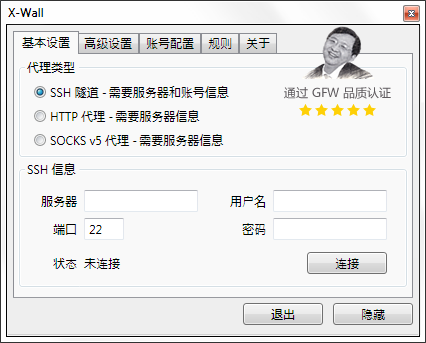

简介
X-Wall 是什么?
X-Wall 是一个整合了 Privoxy 和 Plink (Plink 是 PuTTy 的一部分) 的小工具, 1.3 版新整合了 GoAgent, 提供给大家一个更简单方便的 "科学上网 (翻墙)" 方案.
友情提示 打开 X-Wall 之前, 请先关闭其他相关工具, 切忌交叉使用两种代理, 除非你知道并且能控制产生的影响. 原先配置了 Proxy Switchy (Chrome) 或者 AutoProxy (Firefox) 的用户, 请将插件禁用.

系统要求
Microsoft Windows 2000/XP/7/8
Microsoft .NET Framework 3.5 SP1 (Windows 7 上已经预装)
其他要求
你需要自己准备 SSH 账号 (或者 HTTP/SOCKSv5 代理), 但 SSH 账号通常不是免费的 (也不贵, 便宜的一年不超过50元). 或者你需要一个 Google 账号来配置和部署供 GoAgent 使用的 GAE 应用, X-Wall 内建了 GAE 设置向导, 即使对相关内容不熟悉也可以快速方便地完成应用创建和部署.
特性
- 安装配置傻瓜. 安装后仅需要运行 X-Wall, 通过 GAE 设置向导配置 GoAgent 或者选择 SSH 隧道方式配置 SSH 账号即可使用.
- 内置 GFWList, 每天检查更新. 访问没有被墙的网站则直接连接.
- 支持自定义规则. 需要添加规则时, 从浏览器复制链接, 右键 X-Wall 的托盘图标, 点击 "添加规则" 后按提示操作即可.
- 可以通过 WiFi 把代理共享给其他设备 (需要取消 "只监听本地端口", 如果是使用 GoAgent, 需要在其他设备上也安装 GoAgent 的根证书).
自定义规则
如何添加自定义规则?
当遇到可能被墙的页面时, X-Wall 会通过 Privoxy 的错误页面提示添加自定义规则, 第一次使用的时候浏览器可能会提示是否允许页面打开相关程序, 请选择记住并允许.
另外在 "规则" 选项卡, "自定义规则" 一组中可以找到编辑按钮. 也可以右击托盘图标, 通过弹出的菜单添加规则. 建议在添加规则前, 先从浏览器复制链接地址, 这个时候点击添加规则, X-Wall 会自动提取其中的域名.
更高端的用法
规则部分最终应用到的是 Privoxy 的 filter, 细节可以参见 Privoxy 的手册.
这里也作下简单的介绍. 规则分两部分组成, 即主机(域名或 IP + 端口)和路径. 可以抽象为 [域名/IP][:端口][/路径].
主机
example.com 匹配所有域名是 example.com 的 URL.
.example.com 匹配所有域名是 example.com 或其子域名的 URL.
.example. 匹配所有域名中以 "example." 开头或以 ".example" 结尾, 或包含 ".example." 的 URL.
example.com:443 匹配域名是 example.com, 协议是 HTTPS 的 URL.
域名/IP这部分还支持通配符 * 和 ?.
路径
路径的话, 使用的是正则表达式, 这个就不建议初级用户使用了. 需要了解相关信息可以 Google 下.
自定义不转发
X-Wall 的在线规则 (X-List) 在 GFWList 上有所删减和补充, 有时候可能包括了一些可选但不必要的规则. 不过考虑到多数用户可能不会手动写规则, X-List 会以更大而不是更精确的覆盖面为准则.
如果访问某个在线规则匹配的 URL 时不想翻墙, 或者有其他方式 (比如改 hosts), 可以添加对应的不转发规则. 不转发规则和普通的自定义规则相似, 只是需要在前面加一个感叹号. 比如添加:
!.google.com
即可在访问google.com及其子域名时直连不翻墙.
常见问题
本来这一块儿叫 "使用教程" 的, 但自己都觉得太简单了, 不好意思写教程, 于是改成 "常见问题" 吧.
-
第一次使用时安全软件提示的是什么内容?
主要提示的应该是 "添加启动项", "修改系统代理设置", 请允许并让安全软件记住此操作. 如果不希望开机启动, 可以在 X-Wall 的高级选项卡中关闭.
-
Windows 8 下安装被 SmartScreen 拦截并无法开始, 是怎么回事?
这个是因为程序没有由可信度高的 "证书" 签名 (证书太贵, 一年几百美刀, 作者支付不起), 而且网络下载量还小, SmartScreen 不能确定程序的安全性, 会默认当做不安全的程序处理.
解决方法是点击 "更多信息", 并选择 "仍要运行". 顺便说下, X-Wall 是开源软件, 作者本人也不可能往里面加恶意的东西. 但建议从官方地址下载, 避免被植入了病毒 (虽然这种可能性目前不大).
-
输入 SSH 信息并成功连接后, 依旧无法访问墙外站点, 应该怎么办?
X-Wall 理论上来讲支持任何浏览器, 但前提是浏览器使用的是系统代理设置.
IE 理论上是没问题的, 如果 IE 都无法正常访问的话, 请尝试重新启动 X-Wall, 仍然无效请检查 "Internet 选项" 中的代理是否成功设置 (可能被安全软件拦截了);
Chrome 的话, 请检查是否有安装并启用了相关插件 (比如 Proxy Switchy), 如果有的话, 禁用或卸载即可;
Firefox 除了需要像 Chrome 那样确认相关插件已经禁用, 还需要保证浏览器已经设置为使用系统代理. 具体请依次打开 "选项", 切换到 "高级" 标签, "网络" 选项卡, 在 "连接" 一组里打开 "设置...", 选择 "使用系统代理设置" 并确定即可.
如果是其他浏览器, 请尝试在各种菜单中找找代理相关的设置, 并选择类似 "使用系统设置" 或 "使用 IE 设置" 的选项.
-
提示 "X-Wall 后台代理因为一个错误退出, 这可能是因为端口无效或者被占用." 时应该怎么办?
X-Wall 在第一次运行的时候会自动选择一个未被占用的端口, 但如果之后这个端口被其他程序占用, 则会引起上述错误.
解决方法是先切换到 "高级设置" 选项卡, 在 "X-Wall" 一组中将 "代理端口" 改成其他数字. 如果你对这个的意义不是很了解, 建议在原先端口的数字上累加 1 (如果人品不是太差, 应该就可以了, 依旧报错的话, 可以多累加几次).
-
X-Wall 的连接每隔一段时间会断开一下, 应该怎么办?
这个, Plink 连接久了中途会有一段时间没反应, 为了缩短这个时间, X-Wall 会在疑似这种情况出现的时候, 断开连接并重连, 这个是正常的.
-
GFW 是什么? GFWList 又是什么? 哪个是可以吃的?
如果不知道 GFW 是什么估计也不会用这个工具了, 至于 GFWList, 则是民间收集的一个包含了相当多被墙网站的列表. X-Wall 通过 Privoxy 的 filter 功能, 访问列表中的网站时则爬墙, 对于其他网站则直接连接, 畅通与速度兼得. 如果把 GFWList 打印出来, 应该是可以吃的.
-
VILIC (即作者) 哪年的? 有什么爱好? 还是 available 的状态吗?
嗯... 作者是 92 年的, 爱好物理/编程/绘画/音乐... 而最后一个问题的答案是非常肯定的! 不过作者喜欢的女生需要聪明, 漂亮, 思想独立以及理想主义, 有满足要求并且对长相普通的高 IQ 男有兴趣的欢迎勾搭哦~